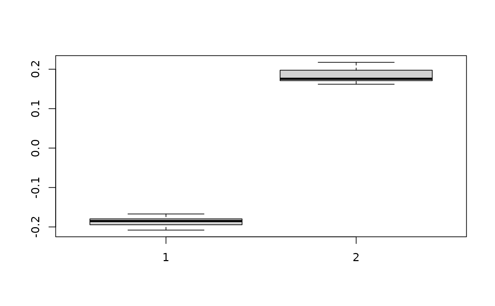

Simulate pixel intensity range for noise
Source:R/simulateNoiseIntensities.R
simulateNoiseIntensities.RdSimulate pixel intensity range for noise
Examples
# nrep and img_size are kept small here so the example is fast; the defaults
# (1000 replications at 512px) are what you want for a real estimate.
simulateNoiseIntensities(nrep = 10, img_size = 64)
#>
|
| | 0%
|
|======= | 10%
|
|============== | 20%
|
|===================== | 30%
|
|============================ | 40%
|
|=================================== | 50%
|
|========================================== | 60%
|
|================================================= | 70%
|
|======================================================== | 80%
|
|=============================================================== | 90%
|
|======================================================================| 100%

#> [,1] [,2]
#> [1,] -0.1670916 0.1619156
#> [2,] -0.2079817 0.2057766
#> [3,] -0.1831231 0.2174042
#> [4,] -0.1928043 0.1730067
#> [5,] -0.1944897 0.1745106
#> [6,] -0.2036256 0.1708929
#> [7,] -0.1691971 0.1651702
#> [8,] -0.1802483 0.1974787
#> [9,] -0.1870383 0.1769743
#> [10,] -0.1795082 0.1830104